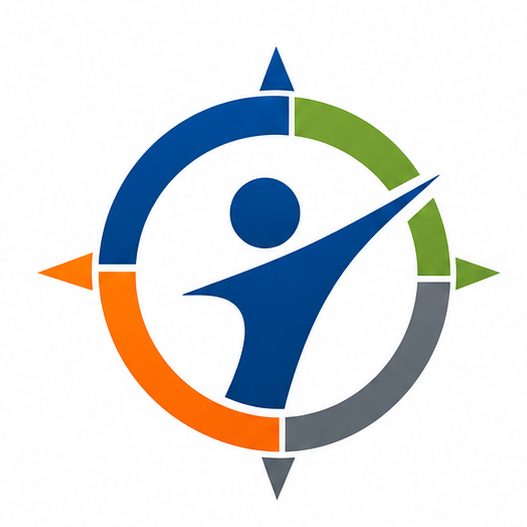
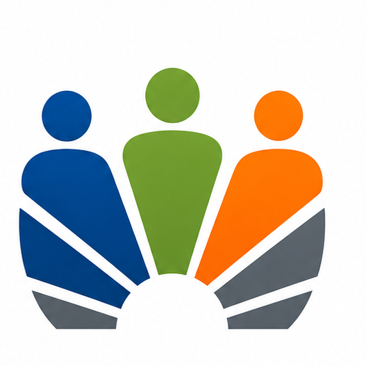
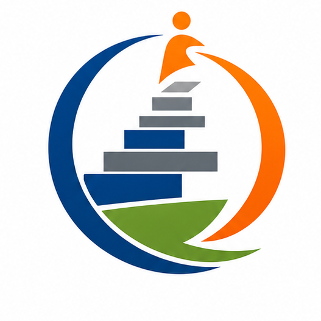
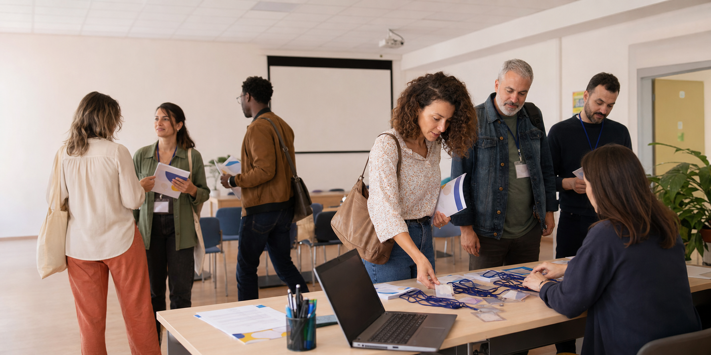
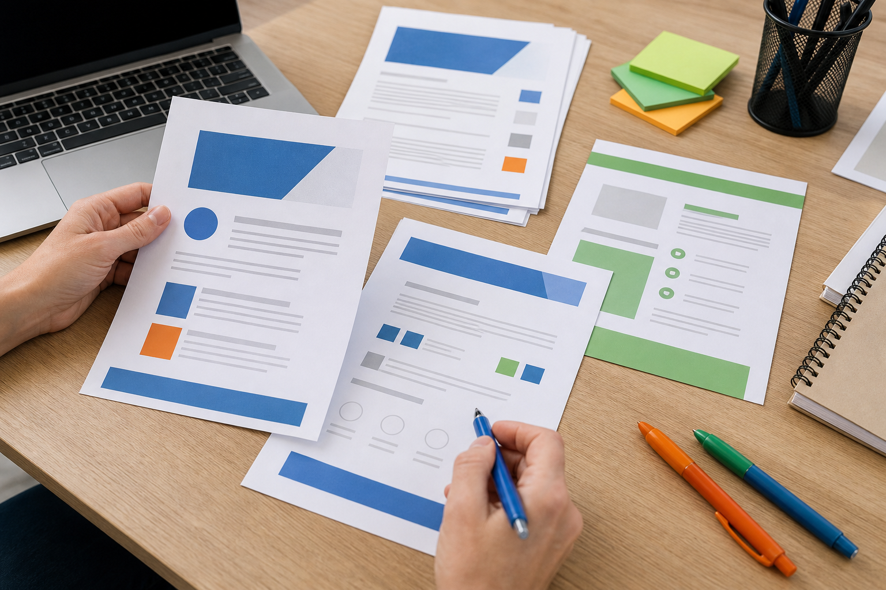
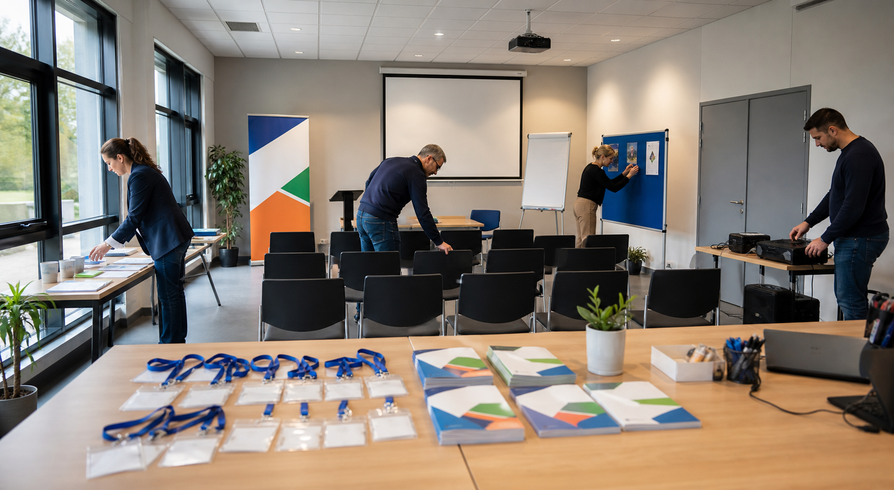
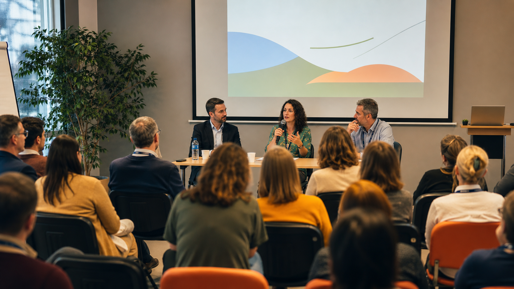
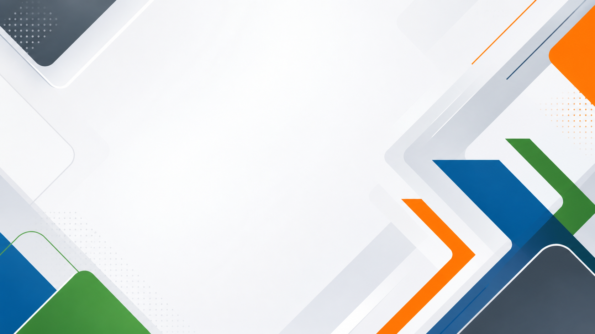

Logo 1 - orientation
Option sobre pour invitation Word et première diapositive.
{kind=link}
logo_01_bleu_orientation.png
Logos, photos, couleurs et règles visuelles pour le projet fil rouge.
La charte doit donner une impression professionnelle, simple et accessible. Les stagiaires choisissent un logo et au moins une photo, puis appliquent les mêmes couleurs dans Word, Excel et PowerPoint.
Choisir un seul logo pour tout le projet. Ne pas mélanger plusieurs logos dans le même rendu.

Option sobre pour invitation Word et première diapositive.
logo_01_bleu_orientation.png

Option plus dynamique pour documents Excel et graphiques.
logo_02_vert_progression.png

Option chaleureuse pour accueil et affiche.
logo_03_orange_rencontre.png
Option neutre pour version institutionnelle.
logo_04_slate_competences.png
Choisir les photos selon le document : accueil pour l'invitation, budget pour Excel, présentation pour PowerPoint.

Image d'ouverture pour invitation ou première diapositive.
photo_accueil_forum_metiers.png
Image adaptée au budget, aux participants ou au graphique.
photo_atelier_excel_budget.png

Image adaptée à l'invitation et au programme.
photo_documents_word_programme.png
Image adaptée à la conclusion ou à la restitution orale.
photo_presentation_powerpoint.png

Image adaptée à l'organisation, au programme ou à la logistique.
photo_preparation_salle_forum.png
Image adaptée aux productions Word et aux documents d'invitation.
photo_accompagnement_cv_word.png
Image adaptée à la partie métier ou recrutement.
photo_echange_recruteur_participants.png
Image adaptée aux synthèses, graphiques et budgets.
photo_tableau_bord_excel.png

Image adaptée à la restitution finale.
photo_table_ronde_metiers.png

Fond 16:9 pour page de titre ou conclusion PowerPoint.
fond_abstrait_powerpoint_16_9.png
#185ABDBleu confiance
Word, titres
#107C41Vert action
Excel, validation
#D24726Orange échange
PowerPoint, accueil
#1F2937Slate texte
Texte principal
#F8FAFCFond clair
Arrière-plan
#E5E7EBBordure
Tableaux
| Élément | Règle |
|---|---|
| Logo | Toujours en haut du document ou sur la première diapositive. Largeur conseillée : 3 à 4 cm dans Word, 10 à 15 % de la diapositive dans PowerPoint. |
| Photo | Une seule photo forte par document ou section. Ne pas étirer l'image. Garder les proportions. |
| Titres | Bleu ou slate, taille lisible, jamais plus de deux tailles de titre dans un document. |
| Excel | Couleurs sobres : en-têtes verts ou slate, graphiques avec 2 à 3 couleurs maximum. |
| PowerPoint | Fond clair, texte court, une idée par diapositive, image en appui du message. |
| Accessibilité | Contraste fort, texte jamais posé sur une zone trop chargée de la photo. |
Visuels générés localement avec imagegen pour ce kit. Ils sont fictifs, sans logos réels et sans texte incrusté obligatoire.
{kind=link}
{kind=link}
{kind=link}
{kind=link}
{kind=link}
{kind=link}
{kind=link}
{kind=link}
{kind=link}
{kind=link}
{kind=link}
{kind=link}
{kind=link}